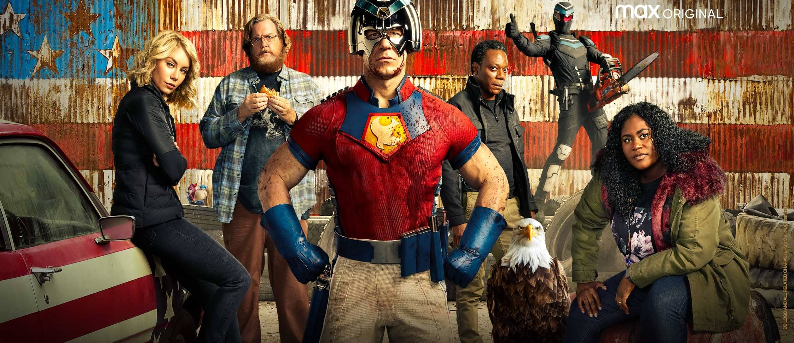

.png)


Videos & Podcasts
Fasten your seat belts! Well, let's activate the hyperspace and travel through the world of Nerdorama's own content! Here you can find all the episodes of our Spotify podcast, where we talk and theorize about movies, series, video games, comics and the entertainment industry. And our YouTube videos with lots of quick and interesting pop culture content! Here there are three main parts where in the first you can find the latest episodes of the podcast and below you find the main playlists of the podcast and in the last part the main playlists of videos. (So far we've only done three podcast episodes and no videos. The three will be below)
Last Podcast Episodes-->
.jpg)
Nerdorama #3 - The Batman
Hello people!! In the third episode of our podcast we are finally going to talk about The Batman! Is he the best Batman? Is it the best Batman movie? Is it the best Batmobile? Batman and Gordon have figured out what "La Rata Alada" is yet? These and other questions will be answered in this serious debate lol *(contains spoilers)*
Nerdorama #2 - Peacemaker
Hello friends!! In this second episode of the Nerdorama Podcast, we talk a little about the series of the Peacemaker that had its season finale released last week (17/02). Tell us: what did you think of the series? and what other little-known hero would you like in a series?
.jpg)
Nerdorama #1 - Book of Boba Fett
First episode of the Nerdorama podcast!! In it we discuss our impressions of the Disney Plus series Boba Fett's Book.